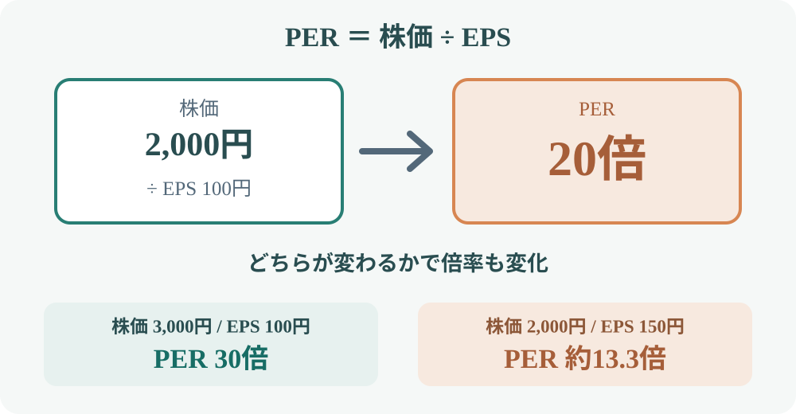

カテゴリツリーを開く
Invest Atlas / ストック原稿
PERとは？株価収益率の計算方法と企業比較での使い方
原稿作成：2026年11月8日
PER（Price Earnings Ratio、株価収益率）は、株価が1株当たり利益（EPS）の何倍で評価されているかを表す指標です。企業の利益に対して株価がどの水準にあるかを考えるときに使います。
1. PERの計算方法
PERは株価を1株当たり利益（EPS）で割って求めます。株価とEPSを同じ時点・同じ基準でそろえることが前提です。
株価2,000円 ÷ EPS100円 ＝ PER20倍
この例では、株価が1株当たり利益の20倍で評価されているという意味です。「利益20年分の価格」と説明されることもありますが、利益が毎年同じとは限らず、株価には将来の成長やリスクも織り込まれます。20年で投資元本を回収できると保証する数字ではありません。

2. 株価とEPSが変わるとPERはどう動く？
PERは株価だけでなくEPSでも変わります。どちらが変化したのかを分けると、数値の意味を理解しやすくなります。
株価が上がり、EPSが変わらない場合
| 項目 | 変化前 | 変化後 |
|---|---|---|
| 株価 | 2,000円 | 3,000円 |
| EPS | 100円 | 100円 |
| PER | 20倍 | 30倍 |
利益が変わらないまま株価だけが上昇すると、PERは高くなります。市場が将来の成長を期待して株価を上げた可能性もあれば、期待が先行している可能性もあります。
EPSが増え、株価が変わらない場合
| 項目 | 変化前 | 変化後 |
|---|---|---|
| 株価 | 2,000円 | 2,000円 |
| EPS | 100円 | 150円 |
| PER | 20倍 | 約13.3倍 |
利益が増えてEPSが上昇すると、株価が同じならPERは低下します。株価が上がっていても、それ以上にEPSが増えればPERが下がることがあります。
3. 高いPER・低いPERの読み方
| PERの水準 | 考えられる背景 | 確認したいこと |
|---|---|---|
| 高い | 将来の利益成長への期待が強い／現在の利益が一時的に小さい | 成長率、利益率、期待が実現する条件、株価に織り込まれた期待 |
| 低い | 利益に対して株価が低い／成長期待が弱い／業績悪化を警戒 | 利益の持続性、事業縮小の有無、財務、景気や競争環境 |
同じPERでも企業の状況は異なります。成長率が高く利益の拡大が見込まれる企業と、利益が減少している企業をPERだけで比較するのは適切ではありません。低PERが「見直されていない割安株」を示す場合もあれば、「将来の利益減少を先取りした株価」を示す場合もあります。
4. 実績PERと予想PER
PERは分母にどのEPSを使うかで数値が変わります。株価は将来を見込んで動くため、予想利益を使うPERもよく利用されます。
| 種類 | 分母に使う利益 | 特徴・注意点 |
|---|---|---|
| 実績PER | 過去の決算で確定したEPS | 確定値を使える一方、過去の利益が現在の実力を表すとは限らない |
| 予想PER | 会社予想や市場予想などの将来EPS | 将来を考えやすいが、業績予想の修正で数値が変わる |
例として株価2,000円、実績EPS100円なら実績PERは20倍です。予想EPSが125円なら予想PERは16倍になります。これは「予想利益が実現した場合の倍率」であり、予想が外れればPERも変わります。データサイトで比較するときは、実績・予想の別、予想対象年度、更新日を確認しましょう。
5. 企業比較の具体例
次は計算を理解するための架空企業です。株価やEPSは実在企業のデータではありません。
| 企業（架空） | 株価 | EPS | PER | 利益成長のイメージ |
|---|---|---|---|---|
| A社 | 2,000円 | 100円 | 20倍 | 年10％成長を想定 |
| B社 | 1,500円 | 100円 | 15倍 | 利益横ばいを想定 |
| C社 | 3,000円 | 100円 | 30倍 | 年20％成長を想定 |
表だけならB社のPERが最も低く見えます。しかし、B社の利益が伸びず、A社・C社は成長を続ける見込みなら、倍率の差には成長期待が反映されている可能性があります。反対に、成長予想が実現しなければ高いPERを正当化できないこともあります。
実際の比較では、同じ業種・近い事業構成の企業を選び、PERの算定基準をそろえたうえで、利益成長率、利益率、財務、利益の一時要因を確認します。業種が違う企業のPERを単純に並べても、比較の意味が薄くなる場合があります。
6. PERが使いにくいケース
赤字企業
EPSがマイナスの場合、株価1,000円÷EPS−50円＝−20倍と計算自体はできます。しかし、通常のPER比較で「マイナス20倍だから割安」とは解釈できません。赤字企業は売上成長、赤字幅の縮小、資金繰り、黒字化の見通しなど別の指標・情報が必要です。
一時的な利益・損失がある企業
資産売却益などの特別利益でEPSが一時的に大きくなると、PERは低く見えます。逆に一時的な損失でEPSが小さくなると、PERは高く見えることがあります。通常の事業で稼ぐ利益と一時要因を分けて確認しましょう。
景気によって利益が大きく変わる企業
景気敏感企業では、好況時に利益が大きくなってPERが低く見え、不況時に利益が減ってPERが高く見えることがあります。現在の利益だけでなく、景気の一巡を通じた利益水準も考える必要があります。
7. PERを実際に見るときの手順
- 算定基準を確認：実績PERか予想PERか、株価とEPSの基準日・年度は何か。
- 同業企業と比較：事業内容や利益構造が近い企業を選ぶ。
- 成長率を確認：利益が増える見込みと、その前提・実現可能性を見る。
- 利益の質を確認：一時的な利益・損失、景気循環、会計上の要因を分ける。
- PER以外も確認：財務、キャッシュフロー、事業リスクなどを合わせて判断する。
PERは企業を比較するための入口です。倍率の大小を結論にせず、「なぜこのPERなのか」を利益と将来見通しから説明できるようにすると、企業分析に活用しやすくなります。
PERの数字だけでは、株価が下落したときにどの程度の損失が起こり得るかまでは分かりません。値動きや損失の考え方は、投資のリスクとリターンもあわせて確認してください。
まとめ
- PERは株価÷EPSで求める、利益に対する株価の倍率。
- 株価とEPSのどちらが変化したかで、PERの動きと意味が変わる。
- 高PERは成長期待、低PERは成長不安などを反映している場合がある。
- 実績PERと予想PERは分母が異なり、予想PERは予想修正で変化する。
- 赤字・一時損益・景気循環のある企業ではPERの単純比較に注意する。